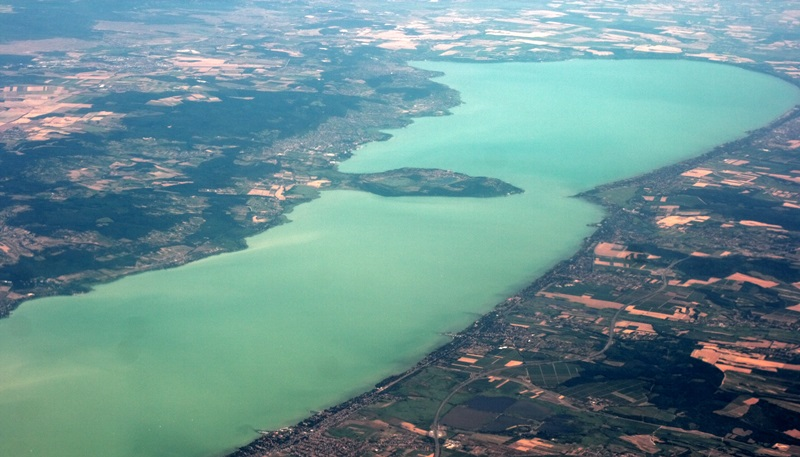
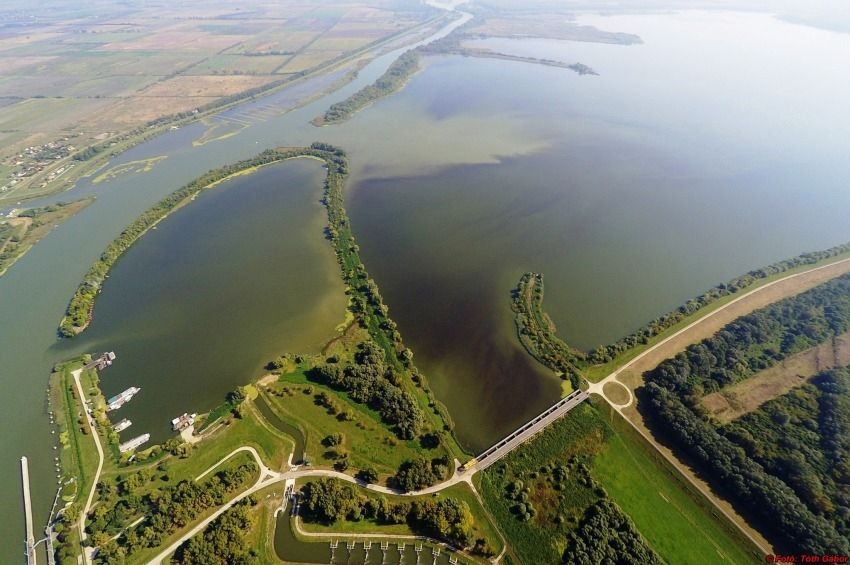

Balaton

A Balaton Magyarország legnagyobb tava, a magyar tengerként is ismert. Híres a nyaralóhelyeiről, fürdőzési lehetőségeiről, borvidékeiről (pl. Badacsony) és kulturális fesztiváljairól. A tó körül kiépített kerékpárút, vitorláskikötők, szabadstrandok, vízicsúszdák és élményparkok várják a látogatókat. A déli part sekély, családbarát, míg az északi part mélyebb, csendesebb. Gasztronómiája is figyelemre méltó: lángos, hekk és balatoni borok várják az érdeklődőket.
A balatoni nyaralás nemcsak a strandolásról szól: a régió kulturális és gasztronómiai kínálata is kiemelkedő. A tihanyi apátság, a Szigligeti vár vagy a balatonfüredi Tagore sétány mind kihagyhatatlan látnivalók. A környéken kiváló éttermek, borászatok és családbarát programok várják az utazókat. A Balaton partja ideális választás akár egy romantikus hétvégére, akár egy aktív, sportos kikapcsolódásra.
Tisza-tó

A Tisza-tó Magyarország második legnagyobb tava, mesterségesen jött létre, de mára természetközeli élővilággal és kalandokkal teli régióvá vált. Horgászparadicsom, csónakos túrák és madármegfigyelések teszik izgalmassá. A Poroszlói Ökocentrum egyedülálló élményt nyújt családoknak. A strandok tiszták és rendezettek, vízi sportokra is kiváló. Ideális célpont a természetkedvelők, kerékpárosok és pihenni vágyók számára.
A Tisza-tó különlegessége, hogy természetközeli élményeket kínál: a vízitúrák során karnyújtásnyira kerülhetsz a madárvilághoz és az érintetlen ártéri erdőkhöz. A gáton végigfutó kerékpárút kiváló lehetőséget ad az aktív pihenésre, a kisebb települések vendégházai pedig csendes, nyugodt szállásokat kínálnak. A Tisza-tó remek alternatíva azoknak, akik a tömegturizmus helyett inkább egy nyugodt, elmélyült nyaralást keresnek.
Szelidi-tó

A Szelidi-tó Bács-Kiskun megyében található, természetes eredetű, sekély vizű tó. Vizének magas jód- és sótartalma jótékony hatással van az egészségre. A környék ideális pihenésre, strandolásra és természetjárásra. A tó partján kempingek, vendégházak, szabadstrandok, vízibicikli és kajak bérlési lehetőségek találhatók. Nyári fesztiváljai is vonzzák a fiatalokat és családokat.
A Szelidi-tó régóta a környékbeli családok kedvence, és egyre több utazó is felfedezi magának ezt a rejtett gyöngyszemet. A sekély víz különösen ideális kisgyermekes családoknak, a tóparti sétányokon pedig kényelmesen végigsétálhatunk a kempingektől egészen a szabadstrandokig. A hely hangulata nyugalmat áraszt, mégis pezseg a nyári élet - koncertek, kézműves vásárok és vízi sportprogramok színesítik az üdülést.